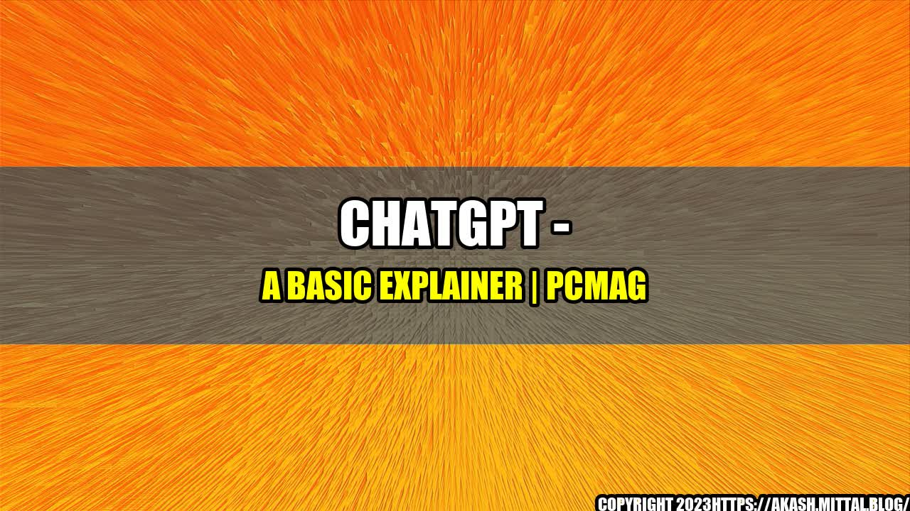

How ChatGPT Made Building Custom Chatbots Easy and Accessible for Everyone
When Asha Bhat, a small business owner, started her online store, the biggest challenge she faced was providing excellent customer service while staying within budget. Hiring dedicated customer support agents was out of her budget, and the idea of using some cheap chatbot builder services from the market wouldn't meet her needs for customization and relevance to her sector.
Then she stumbled across ChatGPT, a chatbot building platform that makes it easy for anyone to design and deploy custom chatbots. The platform offers a simple, drag-and-drop interface that allows businesses to build and launch a chatbot quickly without needing any technical knowledge.
According to Asha, "My newly created chatbot, powered by ChatGPT, reduced the workload of my customer service team by 50% and significantly improved customer satisfaction. The best part is that, I could do it all without the fear of breaking the bank or having to spend weeks on development."
For many businesses, the cost of hiring and training enough customer service representatives to handle incoming queries can be prohibitive. Chatbots, powered by artificial intelligence (AI), make it possible to scale support efficiently. Research by Global Market Insights, Inc. predicts that the chatbot market will hit $1.34 billion by 2024. This growth is due to the increasing adoption of chatbots in e-commerce, BFSI, and healthcare sectors, to name a few.
ChatGPT is one of the platforms poised to capitalize on this growth as it aims to provide businesses with a powerful and easy-to-use solution. Its user-friendly interface makes chatbot building accessible to anyone who desires to create a conversational bot that feels like a human.
Easy-to-Use Interface
ChatGPT's drag-and-drop interface allows users to design customized chatbots quickly. Its no-code interface makes it easy for anyone to create chatbots, even those without any coding experience.
ChatGPT's delightful user interface made my life easier, and I could build customized chatbots without any hassle. I really appreciated the platform's no-code automation! - Marie Whays, Freelance Web Developer
AI-Powered Chatbots
ChatGPT's chatbots use Natural Language Processing (NLP) to understand user queries and intent, which allows them to deliver personalized responses. The platform provides a powerful AI-driven engine, customizable templates, and pre-built connectors to over 1500 applications, enabling businesses to create chatbots that can handle everything from simple FAQs to complex customer service requests.
With ChatGPT, I was able to create a chatbot that can answer a wide range of queries, from product availability to shipping costs. The platform's NLP engine is incredibly intuitive and user-friendly. - Hitarth Sheth, Founder of an e-commerce store
Affordable Pricing
ChatGPT provides a range of plans to cater to businesses of all sizes. Prices start at a very reasonable $29 per month, which includes unlimited queries, 24/7 support, and access to all features.
We were looking for an affordable, yet reliable chatbot building platform, and ChatGPT ticked all the boxes. Their pricing and features were incredible. - John Smith, Co-founder of a startup
Conclusion
ChatGPT has made it easy and accessible for businesses of all sizes to build and launch custom chatbots without the need for any technical knowledge. Using an AI-powered platform helps businesses to cut down on customer support costs and scale their customer service efficiently. With natural language processing, customizable templates, and a simple drag-and-drop interface, ChatGPT offers an affordable solution to businesses and freelancers looking for an easy way to create a powerful and customized chatbot.
If you are looking for a user-friendly chatbot builder that can deliver personalized responses and improve customer satisfaction, ChatGPT is an ideal platform to explore.
Curated by Team Akash.Mittal.Blog
Share on Twitter Share on LinkedIn